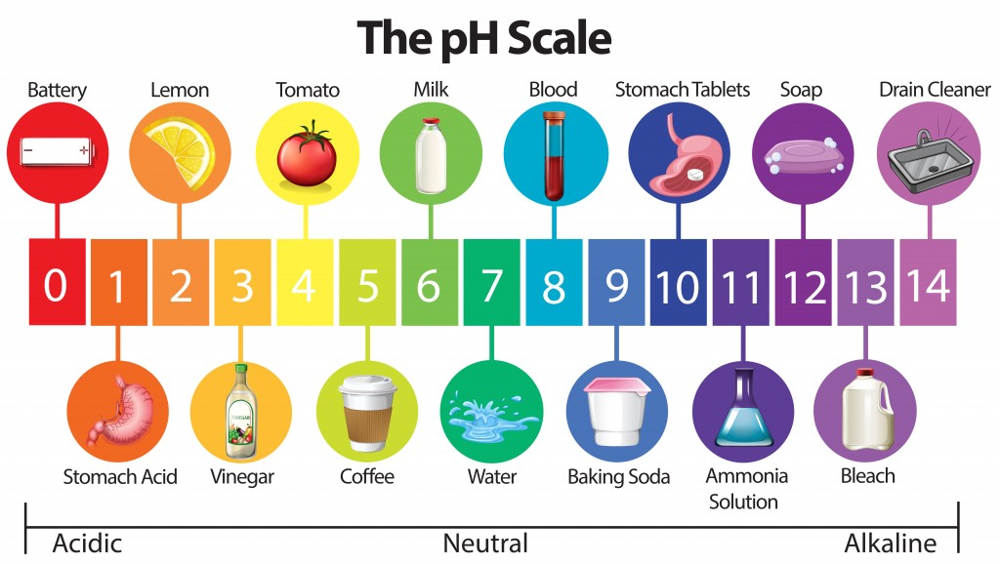
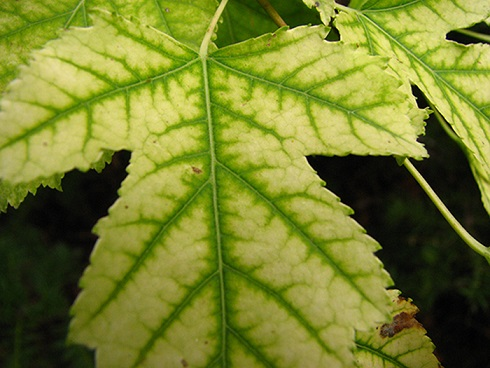
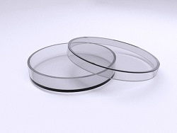
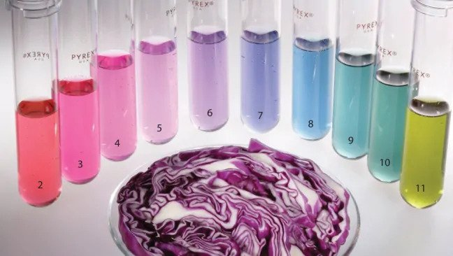
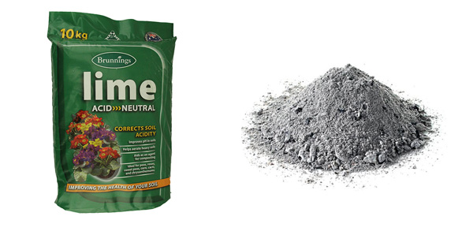
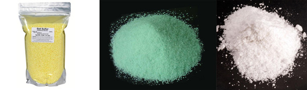

Measuring soil pH (soil acidity or alkalinity) is an extremely useful process, utilised by many gardeners to find out whether their soil is too acidic, too alkaline, or just right for their plants. Different plants namely thrive in different pH ranges.
The pH is a measurement used to indicate whether a substance is acidic, neutral, or alkaline.
The pH scale runs from 0 to 14. Acidic substances have pH values from 0 to 7 (excluding). The lower the pH value, the more acidic the substance. Neutral substances, such as water, have pH equal to 7. The pH values for alkaline substances range from 7 to 14. The closer to 14, the more alkaline a substance is.
The pH is important, as it has a major impact on the availability of certain nutrients in the soil.
For example, pin oaks suffer from iron deficiency if the soil beneath them becomes too alkaline. If the soil becomes alkaline, iron minerals become unavailable to the plants. As the pine oaks, for instance, cannot absorb the iron, a condition known as iron chlorosis occurs, which can be seen by the yellowing of the otherwise green foliage.
The widest range of plants grows in soil whose pH ranges anywhere between 6 and 7.5. There are, however, some exceptions, which require either more acidic or more alkaline growth conditions.
Some plants that require acidic growth conditions are:
Some plants that require alkaline soil are:
As can be seen, either acid or alkaline conditions are required mostly by outdoor plants. All commonly found indoor plants can prosper in soil pH that is close to neutral.
Soil pH meters come in all shapes in sizes. Modern soil pH testers also come with enhanced functionality of also being able to test soil humidity and illumination level of soil at different depths.
A soil pH tester is a device that is usually comprised of two parts. The upper part is where the measurements can be seen, whereas the lower part comprises of either one or two metal probes, the role of which is to measure soil pH.
The accuracy of the soil pH testers depends mostly on the way they are being used. Keep in mind that pH testers are most accurate when measuring the pH level of a solution. Therefore, just sticking the probes of the pH meter inside the soil is not as accurate as it could have been if the soil sample had been dissolved in water.
If digging up soil is not a viable option to measure the soil pH, then measuring pH is rather simple:
Do note that if measuring the pH level of a gardening patch, for instance, testing three or more different sample areas is bound to increase the accuracy of the results.
If, however, digging up soil would not cause harm to adjacent plants, then do the following to carry out the testing for soil pH (this may be the most viable option for garden patches, huge pots, etc.):
Do note that not using distilled water will produce erroneous measurements. Tap water, for example, has somewhat alkaline pH, and rainwater has a rather acidic pH. Using alkaline or acidic water to prepare the solution is bound to make the solution either alkaline or acidic, therefore ruining the correct measurements.
Even greater accuracy may be achieved if the sample of dirt was taken out altogether. You can then put such sample in a petri dish and completely dissolve it using distilled water and then measure the pH level of the solution.
Despite the pH testers being rather affordable, there are also ways to measure soil pH at home without a pH tester kit. There are two homemade tests to test the soil pH:
The benefit of vinegar/baking soda test is that it is quick and effective. It provides a general idea about the soil pH being either acidic, neutral or alkaline. Using this test, however, the exact pH level of the soil sample cannot be measured.
Steps:
The possible results of this test are:
fizzing does not occur (neither in the first cup, neither in the second cup): pH of the soil is neutral (around 7)
fizzing occurs in the cup with vinegar: the soil is alkaline (pH is greater than 7)
fizzing occurs in the cup with baking soda: the soil is acidic (pH is lower than 7)
The red cabbage provides a significantly more accurate pH measurement. The red cabbage colours the sample solution in a distinctive colour, which can then be compared to the full range of possible colours at different pH levels to find out exactly what level of pH the soil has.
The numbers in the tubes correspond to the pH value of the tested sample with the red cabbage water.
Steps:
pour 2 cups (around 5dl) of distilled water into a saucepan
cut up 6 red cabbage leaves and add them to the saucepan
simmer (stay just below the boiling point, where the content of the pan is bubbling gently) for 10 minutes
filter out the content. To carry out this step, take a funnel and a paper towel and place it over the funnel. Make sure to also take another cup and place it below the funnel Pour the content of the saucepan in the centre of the paper towel, so that the content slowly leaks through the paper towel. The resulting solution ("cabbage water") will be purple-blue.
take the soil sample from the garden
add 2 teaspoons of the sample to a cup and then pour over enough "cabbage water" to completely cover the sample
wait 30 minutes
The possible results of the red cabbage water test are:
the solution is reddish/pink: The soil is acidic (pH < 7)
the solution is sea-blue/yellow-green: The soil is alkaline (ph > 7)
The solution is purplish/dark blue: The soil is neutral (pH = 7)
Once you have found out the pH level of your soil, you have to act accordingly to your plants:
if the pH of the soil is within the range for the plants that are planted in that soil, no changes need to be made
if the pH of the soil is lower than the pH that the plants require for growth (in other words, if the soil is too acidic), then lime or wood ashes need to be added to the soil to make the soil more alkaline
if the pH of the soil is greater than the pH that the plants require for growth (in other words, if the soil is too alkaline), then either elemental sulphur or iron sulphate needs to be added to the soil to make it more acidic
Lime, which is an alkaline (pH greater than 7) substance and is therefore used to increase the soil pH, is commonly found in stores in four types:
pulverized lime is easily absorbed by the soil, as it is ground into fine particles
granular/pelletized lime is easier to spread, but it is not as effective as pulverized lime in changing the soil pH
hydrated lime should only be used in case of an extremely acidic soil
Wood ashes are quite alkaline. Adding wood ashes is not as effective as adding lime, but it can increase the soil pH at almost no cost.
After spreading the lime or wood ashes through the patch of soil, make sure to also water it, so that the alkaline agent can be better absorbed by the earth and is also spread to lower layers of the soil.
Applying elemental sulphur, iron sulfate or aluminium sulfate decreases the soil pH. As in the case of lime, make sure to water the plant patch after application, but also make sure to pour some water over the plants, so that no sulphurous compound is left on their leaves.
